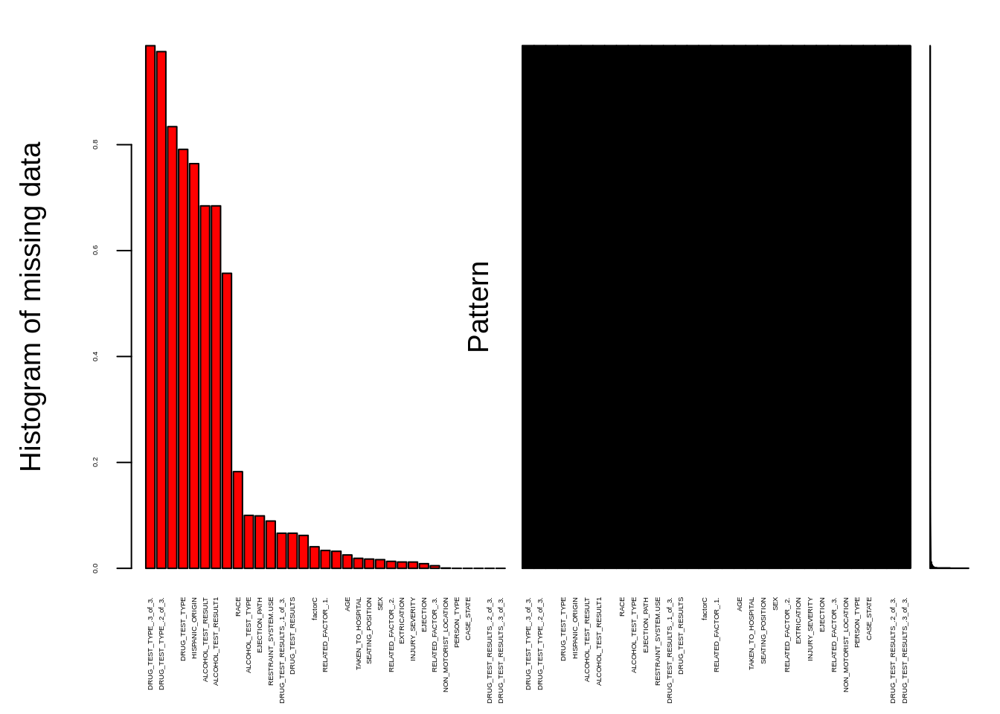
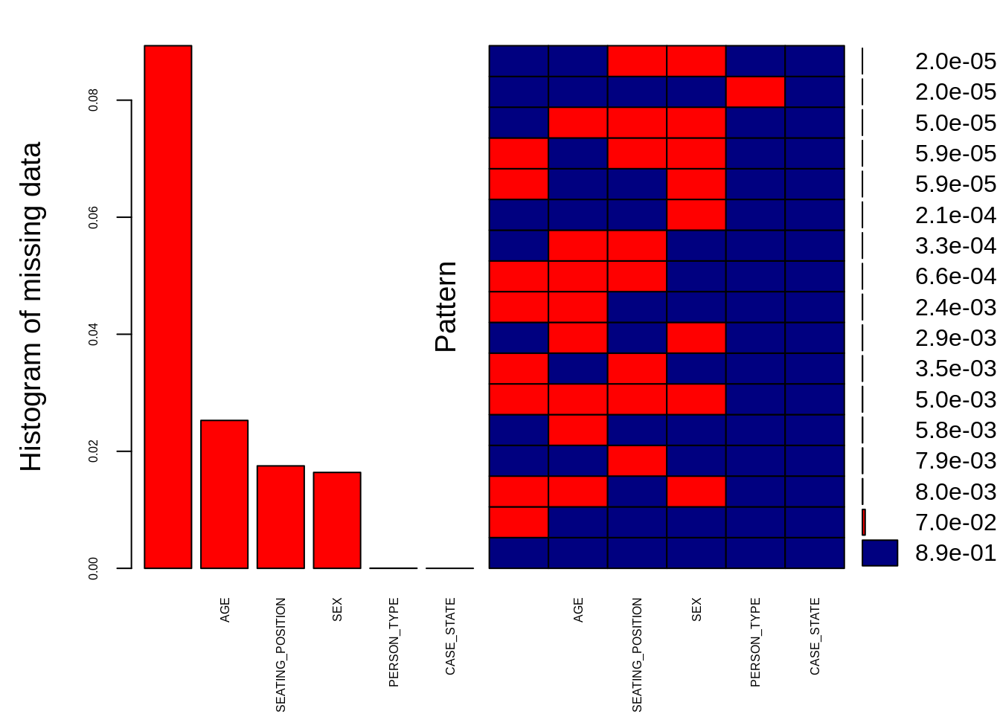
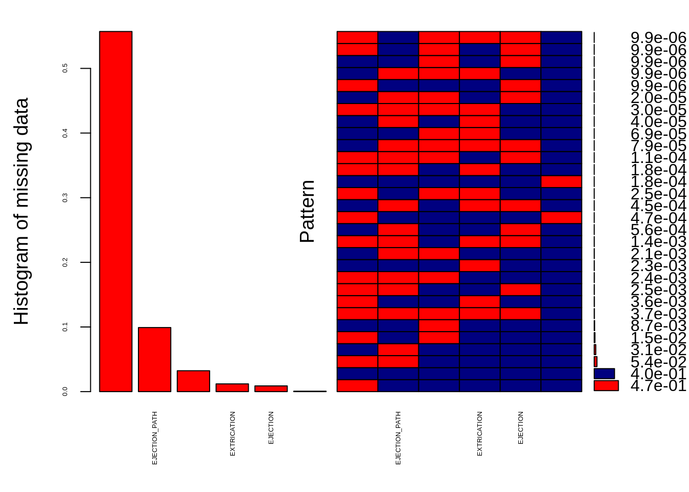
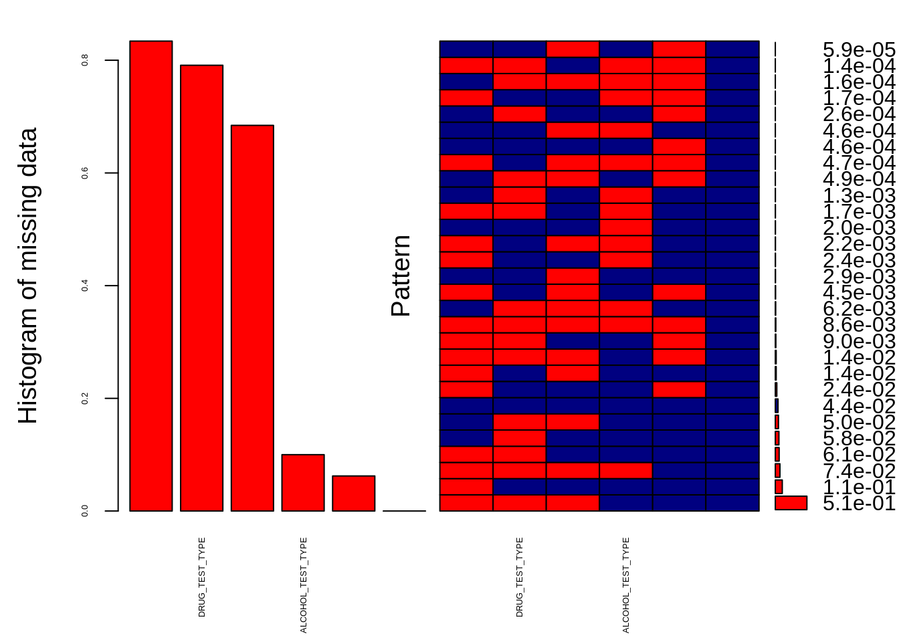
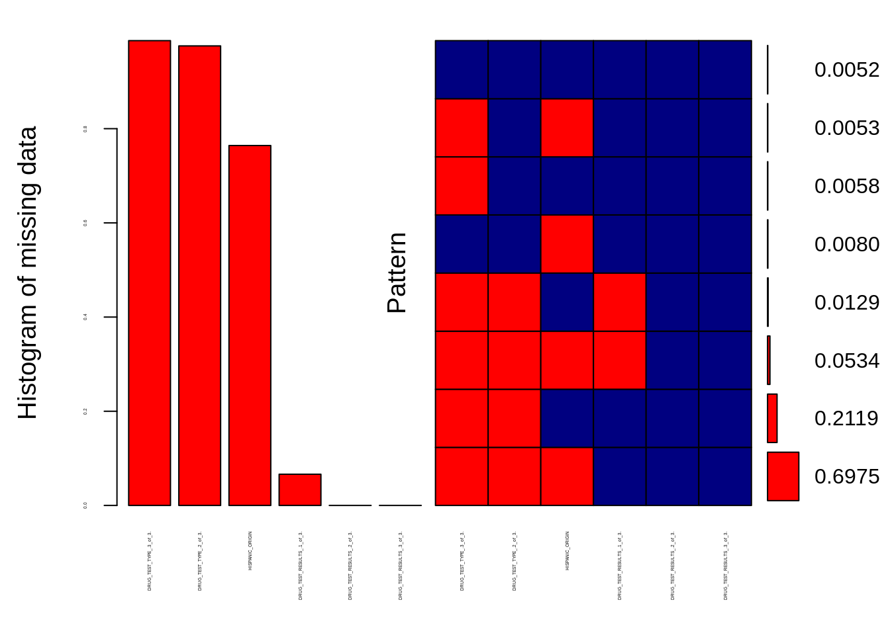
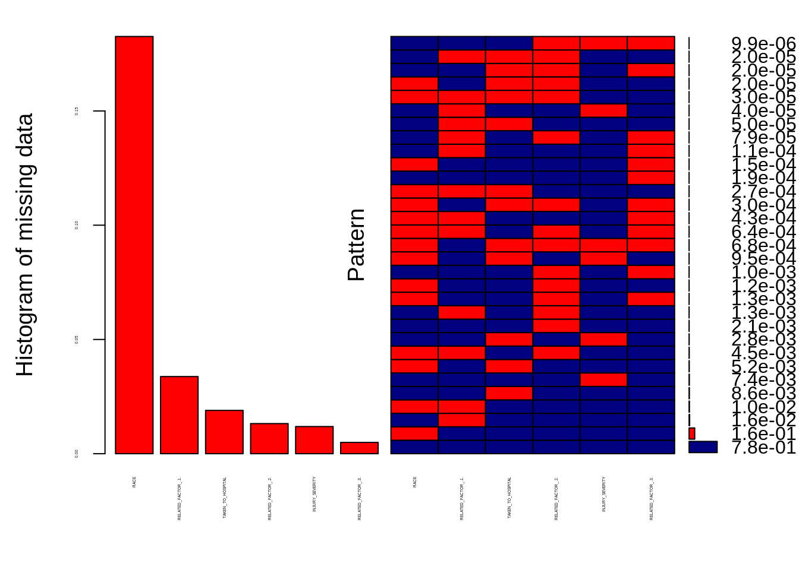

3 Estudio de valores faltantes
aggr_pe <- aggr(df, col=c('navyblue','red'), numbers=TRUE, sortVars=TRUE,
labels=names(df), cex.axis=0.3, gap=0.1,
ylab=c("Histogram of missing data","Pattern"))## Warning in plot.aggr(res, ...): not enough vertical space to display
## frequencies (too many combinations)
##
## Variables sorted by number of missings:
## Variable Count
## DRUG_TEST_TYPE_.3_of_3. 9.868671e-01
## DRUG_TEST_TYPE_.2_of_3. 9.756953e-01
## METHOD_ALCOHOL_DETERMINATION 8.340068e-01
## DRUG_TEST_TYPE 7.911120e-01
## HISPANIC_ORIGIN 7.641728e-01
## ALCOHOL_TEST_RESULT 6.844149e-01
## ALCOHOL_TEST_RESULT1 6.844149e-01
## POLICE_REPORTED_ALCOHOL_INVOLVEMENT 5.570775e-01
## RACE 1.825826e-01
## ALCOHOL_TEST_TYPE 1.000218e-01
## EJECTION_PATH 9.911061e-02
## RESTRAINT_SYSTEM.USE 8.930552e-02
## DRUG_TEST_RESULTS_.1_of_3. 6.628833e-02
## DRUG_TEST_RESULTS 6.628833e-02
## POLICE.REPORTED_DRUG_INVOLVEMENT 6.221773e-02
## factorC 4.072577e-02
## RELATED_FACTOR_.1. 3.377308e-02
## AIR_BAG_AVAILABILITY.DEPLOYMENT 3.228746e-02
## AGE 2.527533e-02
## TAKEN_TO_HOSPITAL 1.895650e-02
## SEATING_POSITION 1.751050e-02
## SEX 1.639133e-02
## RELATED_FACTOR_.2. 1.319230e-02
## EXTRICATION 1.197409e-02
## INJURY_SEVERITY 1.188495e-02
## EJECTION 8.834482e-03
## RELATED_FACTOR_.3. 4.952064e-03
## NON_MOTORIST_LOCATION 6.437683e-04
## PERSON_TYPE 1.980826e-05
## CASE_STATE 0.000000e+00
## METHOD_OF_DRUG_DETERMINATION 0.000000e+00
## DRUG_TEST_RESULTS_.2_of_3. 0.000000e+00
## DRUG_TEST_RESULTS_.3_of_3. 0.000000e+00data1<-df[,c(1:6)]
aggr_pe <- aggr(data1, col=c('navyblue','red'), numbers=TRUE, sortVars=TRUE,
labels=names(data1), cex.axis=0.5, gap=0.1,
ylab=c("Histogram of missing data","Pattern"))
##
## Variables sorted by number of missings:
## Variable Count
## RESTRAINT_SYSTEM.USE 8.930552e-02
## AGE 2.527533e-02
## SEATING_POSITION 1.751050e-02
## SEX 1.639133e-02
## PERSON_TYPE 1.980826e-05
## CASE_STATE 0.000000e+00data2<-df[,c(7:12)]
aggr_pe2 <- aggr(data2, col=c('navyblue','red'), numbers=TRUE, sortVars=TRUE,
labels=names(data2), cex.axis=0.4, gap=0.1,
ylab=c("Histogram of missing data","Pattern"))
##
## Variables sorted by number of missings:
## Variable Count
## POLICE_REPORTED_ALCOHOL_INVOLVEMENT 0.5570774899
## EJECTION_PATH 0.0991106093
## AIR_BAG_AVAILABILITY.DEPLOYMENT 0.0322874574
## EXTRICATION 0.0119740908
## EJECTION 0.0088344822
## NON_MOTORIST_LOCATION 0.0006437683data3<-df[,c(13:18)]
aggr_pe3 <- aggr(data3, col=c('navyblue','red'), numbers=TRUE, sortVars=TRUE,
labels=names(data3), cex.axis=0.4, gap=0.1,
ylab=c("Histogram of missing data","Pattern"))
##
## Variables sorted by number of missings:
## Variable Count
## METHOD_ALCOHOL_DETERMINATION 0.83400681
## DRUG_TEST_TYPE 0.79111204
## ALCOHOL_TEST_RESULT 0.68441486
## ALCOHOL_TEST_TYPE 0.10002179
## POLICE.REPORTED_DRUG_INVOLVEMENT 0.06221773
## METHOD_OF_DRUG_DETERMINATION 0.00000000data4<-df[,c(19:24)]
aggr_pe4 <- aggr(data4, col=c('navyblue','red'), numbers=TRUE, sortVars=TRUE,
labels=names(data4), cex.axis=0.2, gap=0.1,
ylab=c("Histogram of missing data","Pattern"))
##
## Variables sorted by number of missings:
## Variable Count
## DRUG_TEST_TYPE_.3_of_3. 0.98686713
## DRUG_TEST_TYPE_.2_of_3. 0.97569527
## HISPANIC_ORIGIN 0.76417281
## DRUG_TEST_RESULTS_.1_of_3. 0.06628833
## DRUG_TEST_RESULTS_.2_of_3. 0.00000000
## DRUG_TEST_RESULTS_.3_of_3. 0.00000000data5<-df[,c(25:30)]
aggr_pe5 <- aggr(data5, col=c('navyblue','red'), numbers=TRUE, sortVars=TRUE,
labels=names(data5), cex.axis=0.2, gap=0.1,
ylab=c("Histogram of missing data","Pattern"))
##
## Variables sorted by number of missings:
## Variable Count
## RACE 0.182582600
## RELATED_FACTOR_.1. 0.033773077
## TAKEN_TO_HOSPITAL 0.018956501
## RELATED_FACTOR_.2. 0.013192299
## INJURY_SEVERITY 0.011884954
## RELATED_FACTOR_.3. 0.004952064Por tanto se puede observar que los datos faltantes principalmente se encuentran en las variables: METHOD_ALCOHOL_DETERMINATION, POLICE.REPORTED_DRUG_INVOLVEMENT, DRUG_TEST_TYPE, , HISPANIC_ORIGIN AND RACE
Se observa un patrón repetido entre las variables POLICE.REPORTED_DRUG_INVOLVEMENT , ALCOHOL_TEST_TYPE